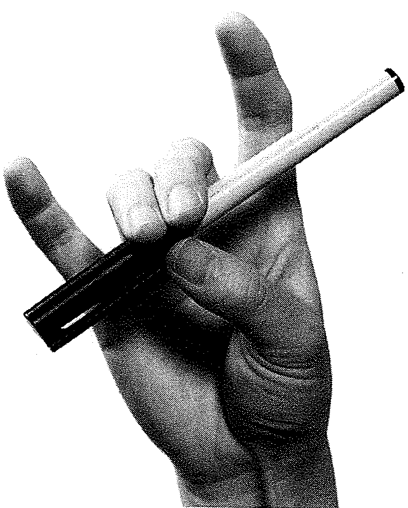

0. Pre-Twinkle Steps
Introduction
In the Pre-Twinkle steps we learn the fundamental skills needed to play the violin, our aim is to develop a solid technique without bad habits. That includes good posture, violin and bow hold, basic rhythms, sound production, etc.

Posture
After parents have completed their training, the first thing we teach the child is how to put their feet, introducing the rest position and the playing position. We can make a small carpet with both positions marked, to provide a visual aid for the child. In rest position, we put our feet toghether, and to go to playing position, we take a step with the right foot, as shown in the diagram:
We also teach the “bow”: in rest position, the student bends forward while counting to three (it is also possible to use a 3-syllable word) while looking at his/her feet. The bow shows mutual respect between student and teacher and provides a starting and ending point for each lesson.
Now is time to learn to hold de violin (at this stage we usually use a cardboard violin). First, we learn to put the violin in rest position. Then, we put the left-hand thumb on the button of the violin and the rest of the fingers on the strings, in order to have a good way of handling the instrument. Now, we can practise the “Statue of Liberty” position, which involves lifting the violin with our straight arm and holding it for several seconds (we can count to 10, for example).
The next step is to rest the violin on our head, and slide it down (making sure the end button points to our ears and neck) until it lands on our shoulder. Lastly, we turn our head and rest it gently in the chinrest, without tension nor awkward positions, and rest our left arm in our right shoulder to avoid holding the instrument with the hand/arm. We repeat this games many times, in order to get the feeling that the violin “comes down”.
In order to hold the bow, we teach the “rabbit”, providing a basic idea of the shape of the bow hand and placement of fingers (specially thumb). Once the student can make a nice rabbit, we teach them to “open the mouth” and take a pencil, which works wonderfully as a practise bow because its low weight. Then we teach to put the rest of the fingers (relaxed, falling to their natural position). After some time practising this, we can take the bow (vertically) and try to keep the same relaxed, round fingers. In the beggining, we put the thumb outside the frog, as it's easier to control for begginers (in the image, the student puts the thumb in the hair of the bow, it is also possible to place it in the metalic piece just before, adapting the position of the rest of the fingers).

Clapping Rhythms
The next step is to clap the Twinkle Variation rhythms (A, B, C, E). Children can learn them through listening and imitation. It is very useful to use the bow hand to clap, as it involves the same movement that we will use later to produce the sound. Once they can clap all rhythms, we can make it more difficult by doing each rhythm 2, 4, or 8 times in a row.
Playing on Open Strings
When the student is ready, we can begin to bow each Twinkle Rhythm, first in the air with a vertical bow, then in the shoulder (we can use a toilet paper roll to force the bow to go straight) and finally in our violin.
We begin bowing in the “e” string, because the movement is vertical, helped by gravity, and it is more difficult to touch neighbour strings. Once all rhythms are mastered in “e” string, we teach to roll the bow to the “a” string, and play. That way, we also learn to change string:

Adding the Left Hand
To prepare the violin hand to play, we draw a smiley face or a cross just above the base knuckle of the first finger, we tell the students to “hide” it in the neck of the violin. We can also tell students to make a “tunnel” with fingers, so the fingers are round and relaxed. Other ideas include the “mirror hand” and “Pinocchio hand”. To avoid tension, it is a good idea to slide on the neck of the violin (as in position changes).
To put the fingers, we help by putting tape lines on the place where the 1st, 2nd and 3rd fingers play. We make the student aware of the squared “shape” of the fingers when we play, and start putting the first finger on the “e” string, and play “f sharp” with Twinkle A rhythm score of exercise. Then, we learn to play open “e”, “f”, and “e” again.

We also learn to put the first three fingers on “a” string, making the student aware of the finger pattern that we will use (1st separated, 2nd and 3rd toghether):

Finally, we learn to lift the fingers as in Twinkle, preparing them as quickly as possible:

Once all this steps are mastered, the student is ready to play Twinkle. First, we will sing the piece and learn the structure (we explain to students it is like a sandwich, with the bread being A and the ham or cheese being B). Then, we can practise each part (A/B) separately, and always with stops between the notes. Finally, we will remove the stops (the last stop we remove is before playing D, because preparing 3 fingers is the most difficult part) and play the different parts toghether.